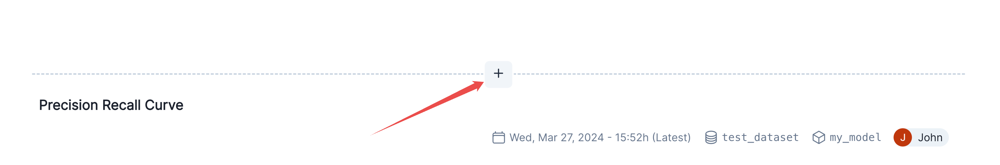
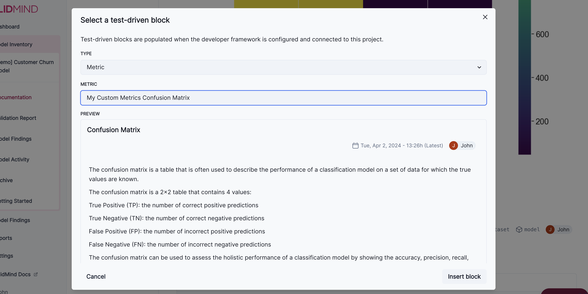
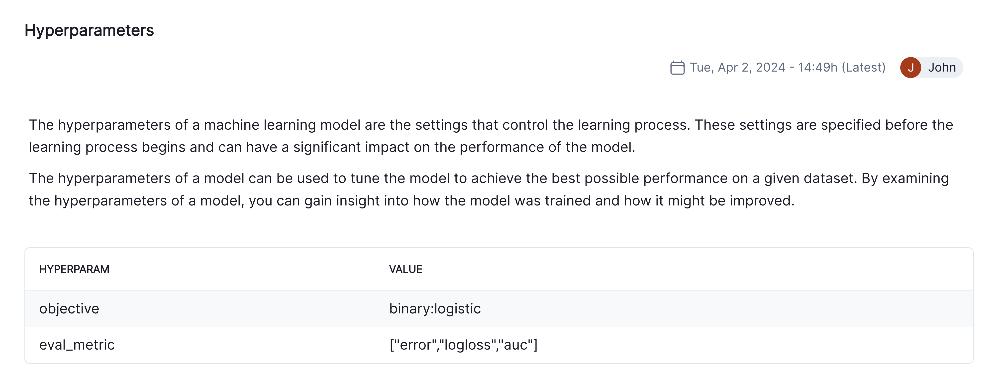
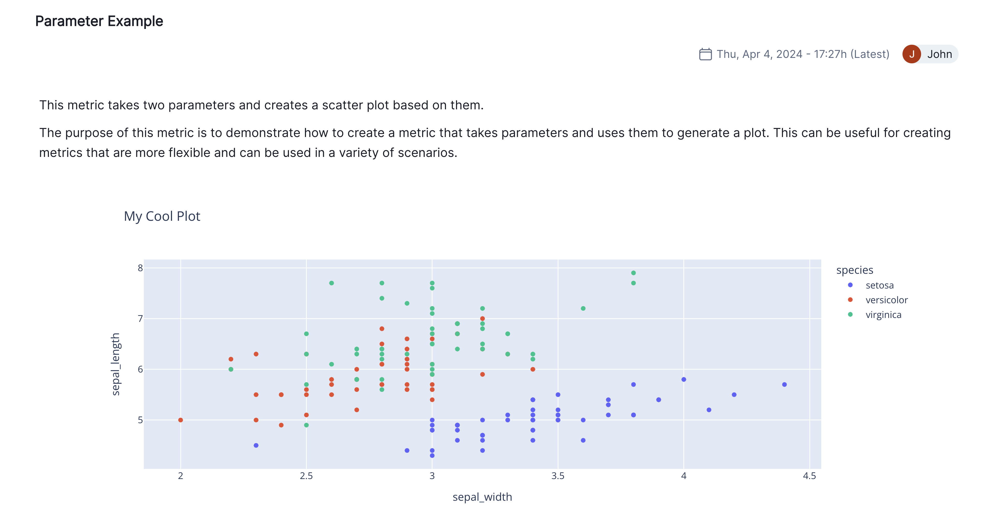
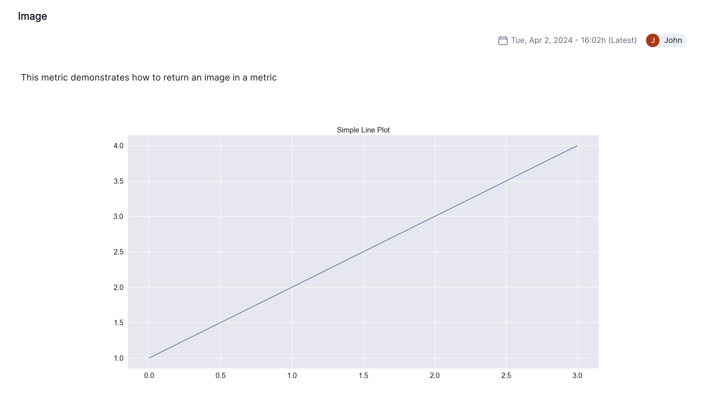

%pip install -q validmindImplement custom tests
Custom tests extend the functionality of ValidMind, allowing you to document any model or use case with added flexibility.
ValidMind provides a comprehensive set of tests out-of-the-box to evaluate and document your models and datasets. We recognize there will be cases where the default tests do not support a model or dataset, or specific documentation is needed. In these cases, you can create and use your own custom code to accomplish what you need. To streamline custom code integration, we support the creation of custom test functions.
This interactive notebook provides a step-by-step guide for implementing and registering custom tests with ValidMind, running them individually, viewing the results on the ValidMind Platform, and incorporating them into your model documentation template.
Contents
About ValidMind
ValidMind is a suite of tools for managing model risk, including risk associated with AI and statistical models.
You use the ValidMind Library to automate documentation and validation tests, and then use the ValidMind Platform to collaborate on model documentation. Together, these products simplify model risk management, facilitate compliance with regulations and institutional standards, and enhance collaboration between yourself and model validators.
Before you begin
This notebook assumes you have basic familiarity with Python, including an understanding of how functions work. If you are new to Python, you can still run the notebook but we recommend further familiarizing yourself with the language.
If you encounter errors due to missing modules in your Python environment, install the modules with pip install, and then re-run the notebook. For more help, refer to Installing Python Modules.
New to ValidMind?
If you haven’t already seen our Get started with the ValidMind Library, we recommend you explore the available resources for developers at some point. There, you can learn more about documenting models, find code samples, or read our developer reference.
For access to all features available in this notebook, create a free ValidMind account.
Signing up is FREE — Register with ValidMind
Signing up is FREE — Register with ValidMind
Key concepts
Model documentation: A structured and detailed record pertaining to a model, encompassing key components such as its underlying assumptions, methodologies, data sources, inputs, performance metrics, evaluations, limitations, and intended uses. It serves to ensure transparency, adherence to regulatory requirements, and a clear understanding of potential risks associated with the model’s application.
Documentation template: Functions as a test suite and lays out the structure of model documentation, segmented into various sections and sub-sections. Documentation templates define the structure of your model documentation, specifying the tests that should be run, and how the results should be displayed.
Tests: A function contained in the ValidMind Library, designed to run a specific quantitative test on the dataset or model. Tests are the building blocks of ValidMind, used to evaluate and document models and datasets, and can be run individually or as part of a suite defined by your model documentation template.
Custom tests: Custom tests are functions that you define to evaluate your model or dataset. These functions can be registered via the ValidMind Library to be used with the ValidMind Platform.
Inputs: Objects to be evaluated and documented in the ValidMind Library. They can be any of the following:
- model: A single model that has been initialized in ValidMind with
vm.init_model(). - dataset: Single dataset that has been initialized in ValidMind with
vm.init_dataset(). - models: A list of ValidMind models - usually this is used when you want to compare multiple models in your custom test.
- datasets: A list of ValidMind datasets - usually this is used when you want to compare multiple datasets in your custom test. See this example for more information.
Parameters: Additional arguments that can be passed when running a ValidMind test, used to pass additional information to a test, customize its behavior, or provide additional context.
Outputs: Custom test can return elements like tables or plots. Tables may be a list of dictionaries (each representing a row) or a pandas DataFrame. Plots may be matplotlib or plotly figures.
Test suites: Collections of tests designed to run together to automate and generate model documentation end-to-end for specific use-cases.
Example: the classifier_full_suite test suite runs tests from the tabular_dataset and classifier test suites to fully document the data and model sections for binary classification model use-cases.
Install the ValidMind Library
To install the library:
Initialize the ValidMind Library
ValidMind generates a unique code snippet for each registered model to connect with your developer environment. You initialize the ValidMind Library with this code snippet, which ensures that your documentation and tests are uploaded to the correct model when you run the notebook.
Get your code snippet
In a browser, log in to ValidMind.
In the left sidebar, navigate to Model Inventory and click + Register Model.
Enter the model details and click Continue. (Need more help?)
For example, to register a model for use with this notebook, select:
- Documentation template:
Binary classification - Use case:
Marketing/Sales - Attrition/Churn Management
You can fill in other options according to your preference.
- Documentation template:
Go to Getting Started and click Copy snippet to clipboard.
Next, load your model identifier credentials from an .env file or replace the placeholder with your own code snippet:
# Load your model identifier credentials from an `.env` file
%load_ext dotenv
%dotenv .env
# Or replace with your code snippet
import validmind as vm
vm.init(
# api_host="...",
# api_key="...",
# api_secret="...",
# model="...",
)Implement a Custom Test
Let’s start off by creating a simple custom test that creates a Confusion Matrix for a binary classification model. We will use the sklearn.metrics.confusion_matrix function to calculate the confusion matrix and then display it as a heatmap using plotly. (This is already a built-in test in ValidMind, but we will use it as an example to demonstrate how to create custom tests.)
import matplotlib.pyplot as plt
from sklearn import metrics
@vm.test("my_custom_tests.ConfusionMatrix")
def confusion_matrix(dataset, model):
"""The confusion matrix is a table that is often used to describe the performance of a classification model on a set of data for which the true values are known.
The confusion matrix is a 2x2 table that contains 4 values:
- True Positive (TP): the number of correct positive predictions
- True Negative (TN): the number of correct negative predictions
- False Positive (FP): the number of incorrect positive predictions
- False Negative (FN): the number of incorrect negative predictions
The confusion matrix can be used to assess the holistic performance of a classification model by showing the accuracy, precision, recall, and F1 score of the model on a single figure.
"""
y_true = dataset.y
y_pred = dataset.y_pred(model)
confusion_matrix = metrics.confusion_matrix(y_true, y_pred)
cm_display = metrics.ConfusionMatrixDisplay(
confusion_matrix=confusion_matrix, display_labels=[False, True]
)
cm_display.plot()
plt.close() # close the plot to avoid displaying it
return cm_display.figure_ # return the figure object itselfThats our custom test defined and ready to go… Let’s take a look at whats going on here:
- The function
confusion_matrixtakes two argumentsdatasetandmodel. This is a VMDataset and VMModel object respectively. - The function docstring provides a description of what the test does. This will be displayed along with the result in this notebook as well as in the ValidMind Platform.
- The function body calculates the confusion matrix using the
sklearn.metrics.confusion_matrixfunction and then plots it usingsklearn.metric.ConfusionMatrixDisplay. - The function then returns the
ConfusionMatrixDisplay.figure_object - this is important as the ValidMind Library expects the output of the custom test to be a plot or a table. - The
@vm.testdecorator is doing the work of creating a wrapper around the function that will allow it to be run by the ValidMind Library. It also registers the test so it can be found by the IDmy_custom_tests.ConfusionMatrix(see the section below on how test IDs work in ValidMind and why this format is important)
Run the Custom Test
Now that we have defined and registered our custom test, lets see how we can run it and properly use it in the ValidMind Platform.
Setup the Model and Dataset
First let’s setup a an example model and dataset to run our custom metic against. Since this is a Confusion Matrix, we will use the Customer Churn dataset that ValidMind provides and train a simple XGBoost model.
import xgboost as xgb
from validmind.datasets.classification import customer_churn
raw_df = customer_churn.load_data()
train_df, validation_df, test_df = customer_churn.preprocess(raw_df)
x_train = train_df.drop(customer_churn.target_column, axis=1)
y_train = train_df[customer_churn.target_column]
x_val = validation_df.drop(customer_churn.target_column, axis=1)
y_val = validation_df[customer_churn.target_column]
model = xgb.XGBClassifier(early_stopping_rounds=10)
model.set_params(
eval_metric=["error", "logloss", "auc"],
)
model.fit(
x_train,
y_train,
eval_set=[(x_val, y_val)],
verbose=False,
)Easy enough! Now we have a model and dataset setup and trained. One last thing to do is bring the dataset and model into the ValidMind Library:
# for now, we'll just use the test dataset
vm_test_ds = vm.init_dataset(
dataset=test_df,
target_column=customer_churn.target_column,
input_id="test_dataset",
)
vm_model = vm.init_model(model, input_id="model")
# link the model to the dataset
vm_test_ds.assign_predictions(model=vm_model)Run the Custom Test
Now that we have our model and dataset setup, we have everything we need to run our custom test. We can do this by importing the run_test function from the validmind.tests module and passing in the test ID of our custom test along with the model and dataset we want to run it against.
Notice how the
inputsdictionary is used to map aninput_idwhich we set above to themodelanddatasetkeys that are expected by our custom test function. This is how the ValidMind Library knows which inputs to pass to different tests and is key when using many different datasets and models.
from validmind.tests import run_test
result = run_test(
"my_custom_tests.ConfusionMatrix",
inputs={"model": "model", "dataset": "test_dataset"},
)You’ll notice that the docstring becomes a markdown description of the test. The figure is then displayed as the test result. What you see above is how it will look in the ValidMind Platform as well. Let’s go ahead and log the result to see how that works.
result.log()Adding Custom Test to Model Documentation
To do this, go to the documentation page of the model you registered above and navigate to the Model Development -> Model Evaluation section. Then hover between any existing content block to reveal the + button as shown in the screenshot below.

Now click on the + button and select the Test-Driven Block option. This will open a dialog where you can select My Custom Tests Confusion Matrix from the list of available tests. You can preview the result and then click Insert Block to add it to the documentation.

The test should match the result you see above. It is now part of your documentation and will now be run everytime you run vm.run_documentation_tests() for your model. Let’s do that now.
vm.reload()If you preview the template, it should show the custom test in the Model Development->Model Evaluation section:
vm.preview_template()Just so we can run all of the tests in the template, let’s initialize the train and raw dataset.
(see the quickstart_customer_churn_full_suite.ipynb notebook and the ValidMind docs for more information on what we are doing here)
vm_raw_dataset = vm.init_dataset(
dataset=raw_df,
input_id="raw_dataset",
target_column=customer_churn.target_column,
class_labels=customer_churn.class_labels,
)
vm_train_ds = vm.init_dataset(
dataset=train_df,
input_id="train_dataset",
target_column=customer_churn.target_column,
)
vm_train_ds.assign_predictions(model=vm_model)To run all the tests in the template, you can use the vm.run_documentation_tests() and pass the inputs we initialized above and the demo config from our customer_churn module. We will have to add a section to the config for our new test to tell it which inputs it should receive. This is done by simply adding a new element in the config dictionary where the key is the ID of the test and the value is a dictionary with the following structure:
{
"inputs": {
"model": "test_dataset",
"dataset": "model",
}
}from validmind.utils import preview_test_config
test_config = customer_churn.get_demo_test_config()
test_config["my_custom_tests.ConfusionMatrix"] = {
"inputs": {
"dataset": "test_dataset",
"model": "model",
}
}
preview_test_config(test_config)full_suite = vm.run_documentation_tests(config=test_config)Some More Custom Tests
Now that you understand the entire process of creating custom tests and using them in your documentation, let’s create a few more to see different ways you can utilize custom tests.
Custom Test: Table of Model Hyperparameters
This custom test will display a table of the hyperparameters used in the model:
@vm.test("my_custom_tests.Hyperparameters")
def hyperparameters(model):
"""The hyperparameters of a machine learning model are the settings that control the learning process.
These settings are specified before the learning process begins and can have a significant impact on the
performance of the model.
The hyperparameters of a model can be used to tune the model to achieve the best possible performance
on a given dataset. By examining the hyperparameters of a model, you can gain insight into how the model
was trained and how it might be improved.
"""
hyperparameters = model.model.get_xgb_params() # dictionary of hyperparameters
# turn the dictionary into a table where each row contains a hyperparameter and its value
return [{"Hyperparam": k, "Value": v} for k, v in hyperparameters.items() if v]
result = run_test("my_custom_tests.Hyperparameters", inputs={"model": "model"})
result.log()Since the test has been run and logged, you can add it to your documentation using the same process as above. It should look like this:

For our simple toy model, there are aren’t really any proper hyperparameters but you can see how this could be useful for more complex models that have gone through hyperparameter tuning.
Custom Test: External API Call
This custom test will make an external API call to get the current BTC price and display it as a table. This demonstrates how you might integrate external data sources into your model documentation in a programmatic way. You could, for instance, setup a pipeline that runs a test like this every day to keep your model documentation in sync with an external system.
import requests
@vm.test("my_custom_tests.ExternalAPI")
def external_api():
"""This test calls an external API to get the current BTC price. It then creates
a table with the relevant data so it can be displayed in the documentation.
The purpose of this test is to demonstrate how to call an external API and use the
data in a test. A test like this could even be setup to run in a scheduled
pipeline to keep your documentation in-sync with an external data source.
"""
url = "https://api.coindesk.com/v1/bpi/currentprice.json"
response = requests.get(url)
data = response.json()
# extract the time and the current BTC price in USD
return [
{
"Time": data["time"]["updated"],
"Price (USD)": data["bpi"]["USD"]["rate"],
}
]
result = run_test("my_custom_tests.ExternalAPI")
result.log()Again, you can add this to your documentation to see how it looks:

Custom Test: Passing Parameters
Custom test functions, as stated earlier, can take both inputs and params. When you define your function there is no need to distinguish between the two, the ValidMind Library will handle that for you. You simply need to add both to the function as arguments and the library will pass in the correct values.
So for instance, if you wanted to parameterize the first custom test we created, the confusion matrix, you could do so like this:
def confusion_matrix(dataset: VMDataset, model: VMModel, my_param: str = "Default Value"):
passAnd then when you run the test, you can pass in the parameter like this:
vm.run_test(
"my_custom_tests.ConfusionMatrix",
inputs={"model": "model", "dataset": "test_dataset"},
params={"my_param": "My Value"},
)Or if you are running the entire documentation template, you would update the config like this:
test_config["my_custom_tests.ConfusionMatrix"] = {
"inputs": {
"dataset": "test_dataset",
"model": "model",
},
"params": {
"my_param": "My Value",
},
}Let’s go ahead and create a toy test that takes a parameter and uses it in the result:
import plotly_express as px
@vm.test("my_custom_tests.ParameterExample")
def parameter_example(
plot_title="Default Plot Title", x_col="sepal_width", y_col="sepal_length"
):
"""This test takes two parameters and creates a scatter plot based on them.
The purpose of this test is to demonstrate how to create a test that takes
parameters and uses them to generate a plot. This can be useful for creating
tests that are more flexible and can be used in a variety of scenarios.
"""
# return px.scatter(px.data.iris(), x=x_col, y=y_col, color="species")
return px.scatter(
px.data.iris(), x=x_col, y=y_col, color="species", title=plot_title
)
result = run_test(
"my_custom_tests.ParameterExample",
params={
"plot_title": "My Cool Plot",
"x_col": "sepal_width",
"y_col": "sepal_length",
},
)
result.log()Play around with this and see how you can use parameters, default values and other features to make your custom tests more flexible and useful.
Here’s how this one looks in the documentation: 
Custom Test: Multiple Tables and Plots in a Single Test
Custom test functions, as stated earlier, can return more than just one table or plot. In fact, any number of tables and plots can be returned. Let’s see an example of this:
import numpy as np
import plotly_express as px
@vm.test("my_custom_tests.ComplexOutput")
def complex_output():
"""This test demonstrates how to return many tables and figures in a single test"""
# create a couple tables
table = [{"A": 1, "B": 2}, {"A": 3, "B": 4}]
table2 = [{"C": 5, "D": 6}, {"C": 7, "D": 8}]
# create a few figures showing some random data
fig1 = px.line(x=np.arange(10), y=np.random.rand(10), title="Random Line Plot")
fig2 = px.bar(x=["A", "B", "C"], y=np.random.rand(3), title="Random Bar Plot")
fig3 = px.scatter(
x=np.random.rand(10), y=np.random.rand(10), title="Random Scatter Plot"
)
return (
{
"My Cool Table": table,
"Another Table": table2,
},
fig1,
fig2,
fig3,
)
result = run_test("my_custom_tests.ComplexOutput")
result.log()Notice how you can return the tables as a dictionary where the key is the title of the table and the value is the table itself. You could also just return the tables by themselves but this way you can give them a title to more easily identify them in the result.
Custom Test: Images
If you are using a plotting library that isn’t supported by ValidMind (i.e. not matplotlib or plotly), you can still return the image directly as a bytes-like object. This could also be used to bring any type of image into your documentation in a programmatic way. For instance, you may want to include a diagram of your model architecture or a screenshot of a dashboard that your model is integrated with. As long as you can produce the image with Python or open it from a file, you can include it in your documentation.
import io
import matplotlib.pyplot as plt
@vm.test("my_custom_tests.Image")
def image():
"""This test demonstrates how to return an image in a test"""
# create a simple plot
fig, ax = plt.subplots()
ax.plot([1, 2, 3, 4])
ax.set_title("Simple Line Plot")
# save the plot as a PNG image (in-memory buffer)
img_data = io.BytesIO()
fig.savefig(img_data, format="png")
img_data.seek(0)
plt.close() # close the plot to avoid displaying it
return img_data.read()
result = run_test("my_custom_tests.Image")
result.log()Adding this custom test to your documentation will display the image:

If you want to log an image as a test result, you can do so by passing the path to the image as a parameter to the custom test and then opening the file in the test function. Here’s an example:
@vm.test("my_custom_tests.MyPNGCorrelationMatrix")
def Image(path: str):
"""Opens a png image file and logs it as a test result to ValidMind"""
if not path.endswith(".png"):
raise ValueError("Image must be a PNG file")
# return raw image bytes
with open(path, "rb") as f:
return f.read()
run_test(
"my_custom_tests.MyPNGCorrelationMatrix",
params={"path": "../../images/pearson-correlation-matrix.png"},
).log()The image is displayed in the test result:
Conclusion
In this notebook, we have demonstrated how to create custom tests in ValidMind. We have shown how to define custom test functions, register them with the ValidMind Library, run them against models and datasets, and add them to model documentation templates. We have also shown how to return tables and plots from custom tests and how to use them in the ValidMind Platform. We hope this tutorial has been helpful in understanding how to create and use custom tests in ValidMind.
Next steps
You can look at the results of this test suite right in the notebook where you ran the code, as you would expect. But there is a better way — use the ValidMind Platform to work with your model documentation.
Work with your model documentation
From the Model Inventory in the ValidMind Platform, go to the model you registered earlier. (Need more help?)
Click and expand the Model Development section.
What you see is the full draft of your model documentation in a more easily consumable version. From here, you can make qualitative edits to model documentation, view guidelines, collaborate with validators, and submit your model documentation for approval when it’s ready. Learn more …
Discover more learning resources
We offer many interactive notebooks to help you document models:
Or, visit our documentation to learn more about ValidMind.
Upgrade ValidMind
After installing ValidMind, you’ll want to periodically make sure you are on the latest version to access any new features and other enhancements.
Retrieve the information for the currently installed version of ValidMind:
%pip show validmindIf the version returned is lower than the version indicated in our production open-source code, restart your notebook and run:
%pip install --upgrade validmindYou may need to restart your kernel after running the upgrade package for changes to be applied.